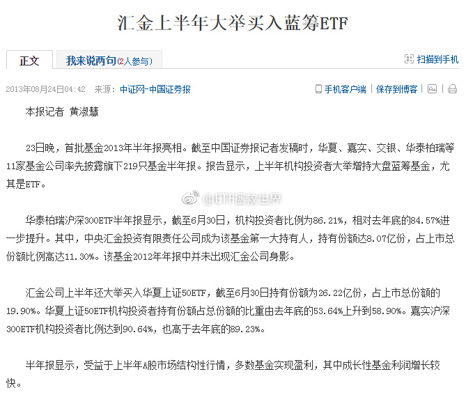
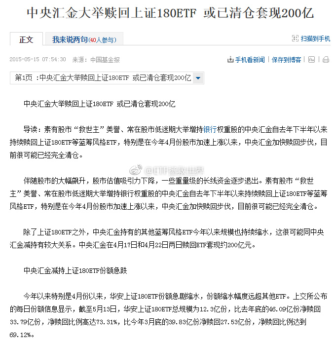

回复@edinlu:历史最低32。//@edinlu:创业历史上从没到过25倍吧？@ETF拯救世界:我表个态。创业板我自己计算的估值到25倍就打满它的仓位。最多可以给到10%-15%。如果到20倍就给到20%。那时候可能是金融危机又来了。
回复@猪的钉耙:昨天纳斯达克26。腾讯50。阿里60。特斯拉亏损。凭什么给国内创业板10-15倍？拍脑袋可不行啊。//@猪的钉耙:回复@股市少先队员:美股小盘股都有20倍估值//@ETF拯救世界:回复@Constance康斯坦丝:真正的smart money，从不扯淡，就是干。@ETF拯救世界:创业板至今披露的中报，业绩真是不错啊。4不4还得买
回复@股市少先队员:最近10-15年，看不到15倍的创业板。20倍都很难见到。//@股市少先队员:方丈说十倍十五倍市盈率才定投创业板，算不算原教旨夹头，e大则么看？//@ETF拯救世界:回复@Constance康斯坦丝:真正的smart money，从不扯淡，就是干。@ETF拯救世界:创业板至今披露的中报，业绩真是不错啊。4不4还得买
来，我来告诉各位，什么是真正的smart money。那是2015年7月前的汇金，比我强到不知道哪里去了。我在15年3、4月就卖的7788，人家5月才撤。再看建仓时间。你不服？这才是联合收割机，跟着dang，有肉吃。当然，15年7月以后，就变成工具了。那以后的操作，就不能代表他们操盘手真正的水平了。 真正的smart，就是要在大众发现之前悄悄潜入，大众狂欢之时静静退出。可惜，能做到的人可以说凤毛麟角。